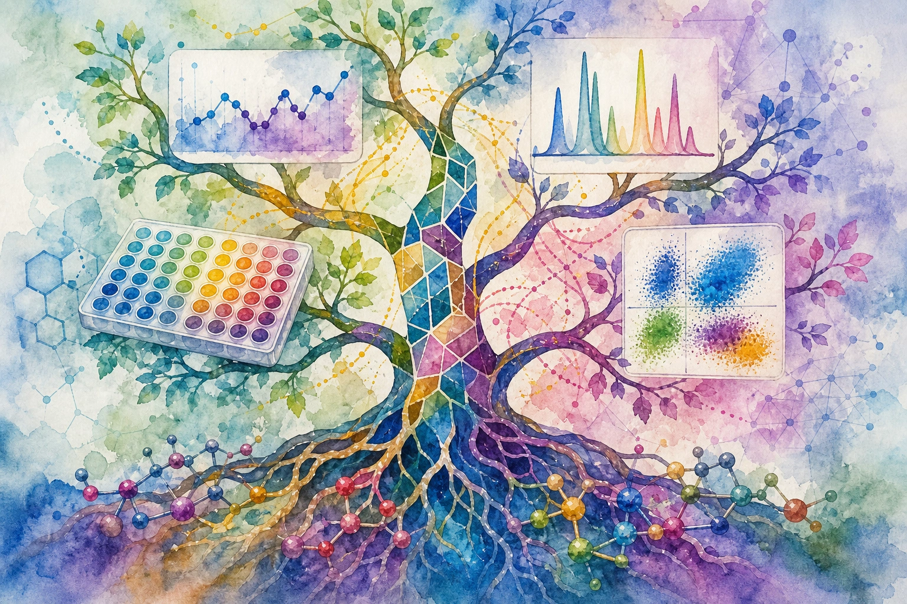

written by Eric J. Ma on 2026-07-19 | tags: xarray datatree python bioinformatics datascience ai agents bayesian curation data packaging lab data

In this blog post, I share how my idea of using xarray for unified lab data evolved into an agent skill for Ian Hunt-Isaak's repo. I explain why xr.DataTree is the key to storing multi-assay data on incompatible grids in a single file, how custom indexes let you query experiments by their actual physical logic, and why Bayesian estimates belong right next to raw data. Ultimately, I argue this pattern scales a single data scientist's judgment across many campaigns. If you are juggling multi-assay biological data, what are your biggest coordinate-matching headaches?
One year ago at SciPy 2025 I wrote a post arguing that laboratory data should live in a single xarray Dataset, with sample IDs as the shared coordinate system. The spark for that post was Ian Hunt-Isaak's SciPy 2025 talk on xarray across biology. The hunch back then was this: store measurements, features, model outputs, and train/test splits in one labeled n-dimensional container, and the index-matching tax disappears.
At this year's SciPy 2026, I closed the loop! During the tutorial, I wrote an xarray-linked-data skill for Ian's scientific-python-skills repo. That hunch from a year ago has now become an agent skill, with Marimo notebook examples to steer agents in the right direction on novel situations. Developing the skill has clarified where the thesis holds and where it still needs work, and that's what I'd like to document here.
A biological data package should be one file that is:
molecule_id, and every assay that molecule appears in comes along for the ride..zarr or .nc file that you can ship, share, and re-open three years later without a README.molecule_id through inheritance.The end goal behind all six bullets is this: to equip one data scientist to curate data packages across an entire campaign (or several at once). The agent skill carries the mechanical assembly and the coding agent runs it. Throughout all this, judgment stays with the human who has seen the warts before.
DataTreeIt took me a year to realize that a single Dataset was not enough. In last year's example, I used one dataset, and it worked because the example was a relatively benign one. The microRNA study had expression, ML features, model outputs, and splits all sharing the molecule axis. Everything was compatible.
Real biology rarely is. A nanoparticle characterization campaign produces data on fundamentally incompatible grids:
Forcing those into one flat Dataset means padding every array to a shared shape, or splitting into multiple files and losing the single-artifact property. Both options give up what made the pattern attractive in the first place.
xr.DataTree is the fix. Each assay becomes a node in a tree. Each node keeps its own grid, but can also inherit a shared coordinate from the root; all nodes inherit the molecule_id coordinate from the root, so selection by molecule propagates everywhere. Here is the pattern from the skill's cross-experiment-linking reference:
import xarray as xr root = xr.Dataset(coords={"molecule": mol_ids}) dls_ds = xr.Dataset( {"diameter_nm": (["molecule", "replicate", "time_s"], dls_timeseries)}, coords={"replicate": ["r1", "r2", "r3"], "time_s": np.linspace(0, 300, 100)}, ) hplc_ds = xr.Dataset( {"signal_au": (["molecule", "retention_min"], hplc_chromatograms)}, coords={"retention_min": np.linspace(0, 30, 1500)}, ) elisa_ds = xr.Dataset( {"od450": (["molecule", "target", "concentration_nm", "replicate"], elisa_data)}, coords={ "target": ["egfr", "her2", "cd20"], "concentration_nm": np.logspace(-1, 3, 8), "replicate": ["r1", "r2", "r3"], }, ) tree = xr.DataTree.from_dict({ "/": root, "/characterization/dls": dls_ds, "/characterization/hplc": hplc_ds, "/bioassays/elisa": elisa_ds, })
The DLS node keeps its time axis. The HPLC node keeps its retention axis. The ELISA node keeps its concentration and target axes. They share molecule for free through inheritance. You save the whole thing as one file:
tree.to_zarr("s3://bucket/campaign_2026q3.zarr")
That's the contract. One file, every assay on its natural grid.
Coordinating by molecule_id is the easy case. The skill's custom indexes are where Ian's own linked-indexes work does the heavy lifting.
Consider a dose-escalation time course. You administer 1 nM, then 10 nM, then 100 nM, then 1000 nM, each over its own time window. Response is measured continuously across the whole experiment. Every wet-lab scientist who has run one of these knows the question that comes next: what was the response during the 100 nM phase?
In pandas, that question is a multi-column filter where you remember which time indices belong to the 100 nM phase, and re-derive the answer every time you ask. With DimensionInterval, a custom defined interval, you register the concentration-to-window relationship once, and the question becomes a one-liner.
# Each concentration is administered over its own time window. # dose_conc (nM): 1 10 100 1000 # dose_intervals: [0,60) [60,120) [120,180) [180,240) dose_ds_linked = dose_ds.drop_indexes(["time", "dose_conc"]).set_xindex( ["time", "dose_intervals", "dose_conc"], DimensionInterval, ) # What was the response during the 100 nM phase? dose_ds_linked.sel(dose_conc=100) # -> time auto-constrained to [120, 180] # What concentrations were active during this time window? dose_ds_linked.sel(time=slice(50, 100)) # -> dose_conc auto-constrained to 1 nM and 10 nM
The relationship is encoded once. Every query after that is a single sel call, in either direction.
The skill ships working implementations of PeriodicIndex (for wrapping coordinates like flow-cytometry angles or circadian time), CoordinateTransform (pixel to micrometers in microscopy, m/z to mass in mass spec), NDIndex (time-locking dosing events across experiments), and DimensionInterval (the phased-regimen pattern above). Five notebooks, each runnable with uv run.
This is the layer that turns xarray from "labeled arrays" into "a coordinate system that understands your experiment."
In February 2025 I argued that archival biological data should be physical quantities with Bayesian uncertainty, not statistical artifacts like p-values. The data package is where that argument lands.
The skill's real-world example puts it directly into practice. The same DataTree holds the raw ELISA OD readings in /bioassays/raw and the Bayesian-derived estimates in /bioassays/derived:
derived = xr.Dataset( { # 4PL fit results "ec50_um": (["molecule", "target", "cell_line"], ec50_estimates), "ec50_std": (["molecule", "target", "cell_line"], ec50_stds), # Bayesian KD estimates with HDI bounds "kd_nm": (["molecule", "target"], kd_means), "kd_nm_hdi_3pct": (["molecule", "target"], kd_lower), "kd_nm_hdi_97pct": (["molecule", "target"], kd_upper), }, coords={"target": ["egfr", "her2", "cd20"], "cell_line": ["hepg2", "hek293"]}, ) tree = xr.DataTree.from_dict({ "/": root, "/bioassays/raw": bioassay, "/bioassays/derived": derived, })
The whole provenance chain sits in one file. The OD reading that produced a KD estimate is one molecule_id lookup away. The HDI bounds travel with the point estimate, so any downstream model that consumes the KD has its uncertainty in the same array. Three years from now, a new data scientist opening this file sees the measurement, the model that produced the estimate, and the uncertainty, all in the same object. No README archaeology, no Slack digging, no "who ran this analysis" archaeology.
This is the part I've been turning over for the past year.
The framing I had in my head when I started the skill was "ship a data package without a data scientist in the room." A wet-lab scientist plus an agent plus a template, and out pops a valid .zarr. But after a few days of thinking, I realized that framing was too optimistic. Building a data package involves judgment calls a wet-lab scientist has no reason to have practiced. Which axis is the entity axis? Where do derived estimates live, and which uncertainty columns travel with them? Did the agent silently drop the HDI bounds when it merged two nodes? Are the units consistent across assays? Did the custom index actually propagate selection, or does it look correct on synthetic data and break on the real thing?
The agent does the mechanical work fast. The agent also does the wrong thing fast. You need a human in the loop who has seen the warts before. In a biotech, that human is the data scientist.
Thus, we gain leverage! Without the skill, one data scientist handcrafts one data package per campaign. The work is mostly pandas merging, dtype wrangling, file-format archaeology, and re-deriving the same coordinate decisions every time. With the skill, the data scientist designs the campaign template once: which assays live at which nodes, which coordinate is the entity axis, where the derived estimates go, what the provenance chain needs. The agent does the per-assay assembly. The data scientist reviews the output, catches the warts, iterates the template, and moves to the next campaign.
One data scientist can now curate many campaigns in parallel. The attention that used to go into pandas goes into judgment: assay design review, coordinate-system choices, validation, catching batch effects, deciding what uncertainty to keep. The agent scales the curator; the curator keeps the judgment.
This is also why I decided to PR to Ian's scientific-python-skills repo and not keep it in my own vault. A skill that lives in my vault helps me. A skill that lives in a public, community-owned home gives every biotech's data scientist the same leverage, and lets the curation patterns converge across the field.
For now, if you're working on multi-assay biological data, the skill is MIT-licensed and the notebooks run with uv run. Pull it, adapt it, break it, and tell me what fell over.
@article{
ericmjl-2026-xarray-in-biology-take-2,
author = {Eric J. Ma},
title = {xarray in biology, take 2},
year = {2026},
month = {07},
day = {19},
howpublished = {\url{https://ericmjl.github.io}},
journal = {Eric J. Ma's Blog},
url = {https://ericmjl.github.io/blog/2026/7/19/xarray-in-biology-take-2},
}
I send out a newsletter with tips and tools for data scientists. Come check it out at Substack.
If you would like to sponsor the coffee that goes into making my posts, please consider GitHub Sponsors!